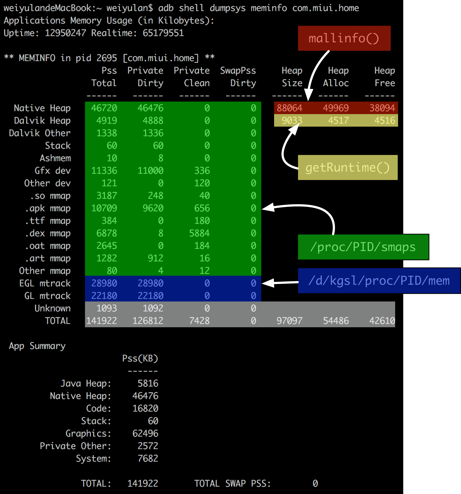
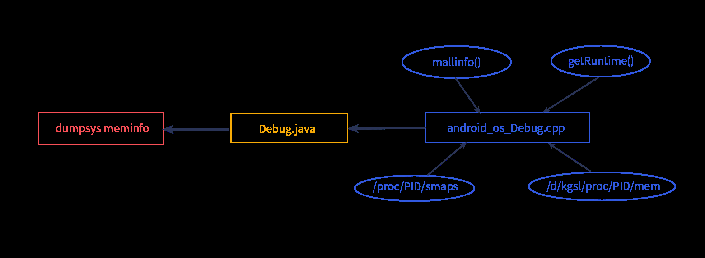
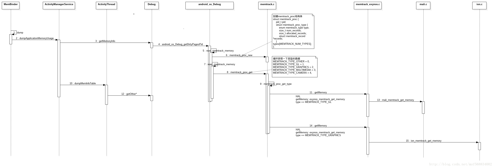
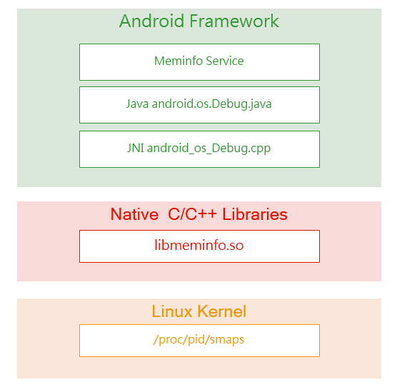
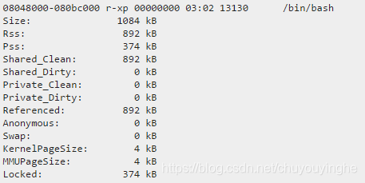
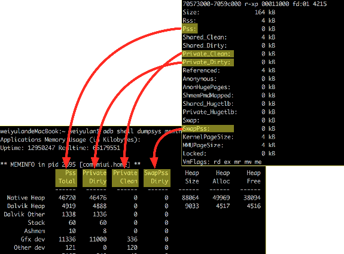
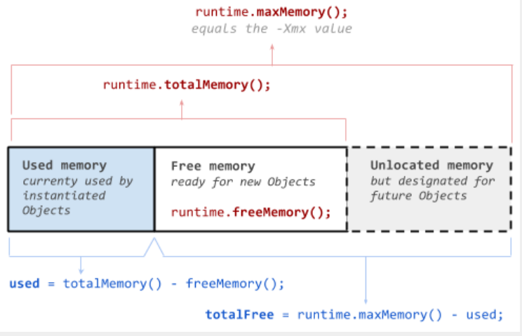
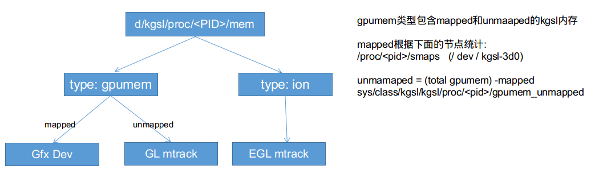
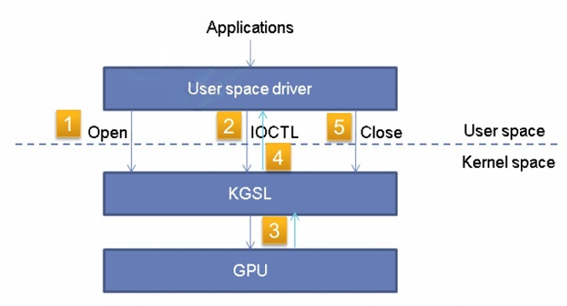

dumpsys meminfo 详解
概述
dumpsys meminfo是 Android 系统中一个非常有用的命令行工具。它用于获取有关系统内存使用情况的详细信息。开发人员、测试人员和系统管理员可以使用这个工具来分析应用程序和系统服务的内存占用，以优化性能、检测内存泄漏等问题。
使用方法
通常可以通过在 Android 设备的终端或者通过 ADB（Android Debug Bridge）连接设备后在电脑的命令行中执行。例如，在连接设备后，在电脑的命令行中输入adb shell dumpsys meminfo可以获取整个系统的内存信息。如果想要查看某个特定应用的内存信息，可以使用adb shell dumpsys meminfo <package_name>，其中<package_name>是应用的包名，比如adb shell dumpsys meminfo com.example.app。
例如：dump当前时刻app的内存占用情况：
1 | adb shell dumpsys meminfo package_name|pid [-d] |
-d 参数会输出更多与 Dalvik 和 ART 内存占用情况相关的信息。
该命令执行前会自动执行一次强制GC，#System.gc/Runtime.getRuntime().gc()#，然后再计算内存。由于GC是异步，所以第一次执行得到的meminfo不一定是完成GC后的内存，最好是两次dump来获取GC的内存，以排除GC部分的干扰
输出：
1 | ** MEMINFO in pid 28083 [com.android.camera] ** |
实现原理
统计组成

1 | 注：这里GL mtrack部分是GPU内存，MTK和高通有差异，这里主要是介绍高通平台的。 |
• 绿色部分：通过读取/proc/pid/smaps获得
• 蓝色部分：通过memtrack 从hal读取 /d/kgsl/proc/pid/mem获得
• 红色部分：通过Debug#getNativeHeapSize()调用native方法通过mallinfo获得
• 黄色部分：通过Runtime.getRuntime()获得当前Dalvik虚拟机内存占用
数据的获取过程：

• 4个彩色字段中的数据由 android_os_Debug.cpp 获取，再将手机到的数据传入到 Debug.java 中；
• Debug.java 中进行传入数据的统计工作，App Summary 中数据的统计计算工作主要在这部分完成；
• dumpsys meminfo 完成数据的输出，对应代码为 ActivityThread.java
| dumpsys meminfo输出属性名 | android_os_Debug.cpp中数据的名称和相关计算 | 说明 |
|---|---|---|
| Pss Total | Pss 实际使用的内存，这里考虑了与Zygote的共享。任何独占的内存页直接计算它的PSS值，而和其它进程共享的页则按照共享的比例计算PSS值。 |
用于衡量考虑共享情况后实际占用的内存量。 |
| Private Dirty | Private_Dirty 进程私有的，相对磁盘数据有改动的内存。 |
体现进程中那些相对于磁盘数据有变更的私有内存部分。 |
| Private Clean | Private_Clean 进程私有的，相对磁盘数据没有修改的内存。 |
反映进程里相对磁盘数据未修改的私有内存情况。 |
| SwapPss Dirty | SwapPss Android 4.4的一个优化，swap to zRAM。牺牲CPU，减少内存。这两个值的区别在于内核是否是统计按比例分出的swap数据，是的输出为SwapPss Dirty。 官方解释：Whether the kernel reports proportional swap usage. |
与特定的内存优化机制相关，通过是否按比例统计swap数据来区分该属性值。 |
| Swap Dirty | Swap | - |
• Private Clean和Private Dirty的总和就是当前进程的独占内存，当进程销毁时系统会回收这部分内存
源码跟踪

大体流程如下：
1 | main() //type=Type::DUMP |
具体源码：
https://xrefandroid.com/android-14.0.0_r21/xref/
meminfo解析
smap获取的数据
- meminfo读取进程的smaps从上到下的调用关系图。
 - /proc/PID/smaps 中根据映射规则统计数据
- smaps文件格式：
- 08048000-080bc000 地址范围 地址空间的开始地址 - 结束地址
- r-xp 权限标识。前三个是rwx（读、写、可执行）,如果不具有则为“-”。最后一个是p/s(私有/共享)
- 00000000 映射文件偏移。如果这段内存是从文件里映射过来的，则偏移量为这段内容在文件中的偏移量。如果不是从文件里面映射过来的则为0.
- 03:02 设备号 如果这段内存是从文件里映射过来的, 这是文件所在的主要和次要设备号（十六进制）。
- 13130 inode 如果这段内存是从文件里映射过来的, 这是文件编号.
- /bin/bash 文件路径 如果这段内存是从文件里映射过来的,这是文件名.对于匿名映射区域，此字段为空白。还有一些特殊区域的名称如 [heap]、[stack] 或 [vdso]。 [vdso] 代表虚拟动态共享对象。系统调用使用它来切换到内核模式。
- Size：表示该映射区域在虚拟内存空间中的大小。
- Rss：表示该映射区域当前在物理内存中占用了多少空间
- Shared_Clean：和其他进程共享的未被改写的page的大小
- Shared_Dirty： 和其他进程共享的被改写的page的大小
- Private_Clean：未被改写的私有页面的大小。
- Private_Dirty： 已被改写的私有页面的大小。
- Swap：表示非mmap内存（也叫anonymous memory，比如malloc动态分配出来的内存）由于物理内存不足被swap到交换空间的大小。
- Pss：该虚拟内存区域平摊计算后使用的物理内存大小(有些内存会和其他进程共享，例如mmap进来的)。比如该区域所映射的物理内存部分同时也被另一个进程映射了，且该部分物理内存的大小为1000KB，那么该进程分摊其中一半的内存，即Pss=500KB。

dumpsys meminfo描述
| App Detail | 描述 | 映射匹配规则及说明 |
|---|---|---|
| Native Heap | c/cpp中malloc出来的堆空间 Native代码分配的内存（比如so库中分配的内存）、虚拟机、Framework分配的内存 |
[heap] [anon:libc_malloc] /dev/ashmem/libc malloc |
| Dalvik Heap | Java中new出来的Java堆空间，只占用虚拟内存空间 Dalvik虚拟机分配的空间，不包括它自身的开销（例如即时编译 (JIT) 和垃圾回收记录）。Dalvik堆中和Zygote进程共享的部分算是sharedDirty。 |
/dev/ashmem/dalvik-alloc space /dev/ashmem/dalvik-main space /dev/ashmem/dalvik-large object space /dev/ashmem/dalvik-free list large object space /dev/ashmem/dalvik-non moving space /dev/ashmem/dalvik-zygote space |
| Dalvik Other | 类数据结构和索引占据内存 JIT和GC等占用的空间。 |
/dev/ashmem/dalvik-LinearAlloc /dev/ashmem/dalvik-indirect ref /dev/ashmem/dalvik-jit-code-cache /dev/ashmem/dalvik-data-code-cache /dev/ashmem/dalvik-CompilerMetadata /dev/ashmem/dalvik-* |
| Stack | 应用中的原生堆栈（线程分配）和Java堆栈使用的内存。这通常和应用运行多少线程有关 | [stack* |
| Cursor | CursorWindow占用的空间，与SQL有关。 | /dev/ashmem/CursorWindow |
| Ashmem | 匿名共享内存。 | /dev/ashmem* 不以dalvik-开头的内存区域，匿名共享内存用来提供共享内存通过分配一个多个进程可以共享的带名称的内存块。 且不满足Dalvik Heap、Dalvik Other、Cursor |
| Gfx dev | /dev/kgsl-3d0占用的空间。是进程通过kgsl分配的内存计数 | /dev/kgsl-3d0 |
| Other dev | /dev/* 且不满足Gfx dev、Cursor、Native Heap、Ashmem、Dalvik Other、Dalvik Heap |
|
| .so mmap | 映射的.so（native）代码占用的RAM。具有较大的Private Dirty RAM，因为在加载到其最终地址时对native代码进行了修改。 | 以.so结尾 若文件名为空，且上一个文件名满足.so mmap |
| .jar mmap | Java文件代码占用内存。 | 以.jar结尾 |
| .apk mmap | apk代码占用内存。简单来说就是class文件的字节码，也可以理解apk中类所占用的内存，Android中.dex文件将所有APK中的.class里边所包含的信息全部整合在一起，所以Class字节码信息存储在.dex文件中。 | 以.apk结尾 |
| .ttf mmap | ttf文件代码占用内存。 | 以.ttf结尾 |
| .dex mmap | 映射的.dex（Dalvik或ART）代码占用内存。 | 以.dex结尾 以.odex结尾 以.vdex结尾 |
| .oat mmap | 代码映像占用的内存。此映像在所有应用之间共享，不受特定应用影响。 | 以.oat结尾 |
| .art mmap | 堆映像占用的内存。此映像在所有应用之间共享，不受特定应用影响。 | 以.art结尾 尽管ART映像包含Object实例，它仍然不会计入您的堆大小。 |
| Other mmap | 其它文件占用的内存 | 文件名不满足以上任一条件，但文件名不为空 |
| EGL mtrack | ION内存 | |
| GL mtrack | GPU内存 | |
| HEAP_UNKNOWN | [anon:* 或者文件名为空 |
Native Heap 与 Dalvik Heap 的特有属性
1 | Pss Private Private SwapPss Heap Heap Heap |
- Native Heap 的 Heap Size 、Heap Alloc 和 Heap Free 属性在 android_os_Debug.cpp 中调用 mallinfo() 完成对内存分配信息的获取。
- Native Heap Size -> getNativeHeapSize() -> info.usmblks
- Native Heap Alloc -> getNativeHeapAllocatedSize() -> info.uordblks
- Native Heap Free -> getNativeHeapFreeSize() -> info.fordblks
- Dalvik Heap 的 Heap Size 和 Heap Free 属性在 ActivityThread.java 中由 getRuntime() 完成对分配信息的获取。代码位置：rameworks/base/core/java/android/app/ActivityThread.java
- runtime.maxMemory()：虚拟机能够从操作系统那里申请的最大的内存
- Dalvik Heap Size -> runtime.totalMemory()：虚拟机这个进程当下所占用的所有内存
- Dalvik Heap Free -> runtime.freeMemory()：当前释放的内存
Dalvik Heap Alloc -> runtime.totalMemory() - runtime.freeMemory()

| 属性 | Native Heap | Dalvik Heap |
|---|---|---|
| Heap Alloc | 堆中已分配的空间，包含了进程共享的分配部分。 | 由虚拟机分配的所有应用实例的内存，包含了 zygote 共享的部分，所以Heap Alloc值总是比实际物理内存使用值要大。 |
| Heap Free | 当前进程堆剩余的空间。 | 当前释放的内存，若调用 GC 会增大这个值。 |
| Heap Size | 当前进程堆总内存大小。 | 当前所有可用内存 |
- 为什么Pss Total和Heap Alloc不一致？
- 答：Pss Total是指占用了真实的物理内存的空间；Heap Alloc只是占用的虚拟内存的空间。是分配了空间，没有使用的那部分内存
- 例如：
- Native Heap Pss Total列是2737 也就是native代码中分配了2737KB的物理空间被占用
- Heap Size列是9728，是指Native堆最大是9728KB
- Heap Alloc列是8103，是指在虚拟地址中分配了8103KB的空间
Graphics相关的统计
EGL mtrack 和 GL mtrack 描述的是 GPU 的占用数据，与他们相同的还有 Other mtrack 。
路径：Debug.java -> android_os_debug.cpp -> memtrack.cpp -> kgsl.c
最终在hardware/qcom/display/libmemtrack/kgsl.c （GPU分析代码由高通提供）中读取d/kgsl/proc/<pid>/mem中的内容。
google官方解释：
- EGL memtrack
You will see this column when display driver’s memtrack module is enabled Before Lollipop5.1, this column is named “Graphics”. EGL memtrack memory is the summary of all surface buffers(the surface buffer increases to triple buffer after Android 4.1) and the size of the Atlas buffer. However, Atlas buffer is actually a shared memory and shouldn’t be accounted into each UI process’ memory usage to overcount the memory usage. Both surface buffer and Atlas buffer’s memory quota is reserved in project’s memory estimation, thus the memory usage of these buffers should be separately accounted from process’ memory usage. So when you measure process’ memory usage, you can ignore this column. - GL memtrack
You will see this column when display driver’s memtrack module is enabled Before Lollipop5.1, this column is named “GL”. HW acceleration memory is partially counted in process PSS. For example, for QCT platform the HW acceleration memory is partially counted in the PSS of /dev/kgsl-3d0 as we mentioned in the “Gfx dev” section. GL memtrack memory usage calculates the unaccounted /dev/kgsl-3d0 memory regions which PSS value equals 0. Please be noticed that the summation of GL memtrack and Gfx dev doesn’t reflect the complete HW acceleration memory since the full HW acceleration memory usage should be counted with the VSS of /dev/kgsl-3d0. So the “TOTAL” value of dumpsys meminfo is smaller than actual physical memory usage.
App Detail 说明 Gfx dev - 是指通过kgsl分配的内存，也即共享虚拟内存（svm memory）并且映射到进程地址空间的内存大小，通过解析/proc/ /smaps (/dev/kgsl-3d0)。
- 比如一个进程通过kgsl分配了16KB的内存，但是map了4KB的内存，那么Gfx dev = 4KB。
- cat pid_smaps.txt | grep -i kgsl-3d0 -A 5 | grep Pss ，将pss求和得到Gfx dev。
- adb shell cat sys/class/kgsl/kgsl/proc/pid/gpumem_mapped，获取mapped内存。GL mtrack - 是指通过kgsl分配的内存，未映射到进程地址空间的内存大小。
- 如果一个进程分配了16Kb并且映射了4kb，然后GL mtrack将会是12KB。
- d/kgsl/proc//mem中“mapsize”之和 = /sys/class/kgsl/kgsl/proc/ /gpumem_mapped。
- gpumem_unmapped = total gpumem - gpumem_mapped。
- adb shell cat sys/class/kgsl/kgsl/proc/pid/gpumem_unmapped。
- 与/dev/kgsl-3d0和Gfx dev有关。这是/dev/mali和/dev/ump占用内存的总和。EGL mtrack - 统计EGL资源，gralloc分配的内存，主要是窗口系统，SurfaceView/TextureView和其他的由gralloc分配的GraphicBuffer总和。也包括了帧缓冲区，因此大小也会取决于framebuffers的尺寸。支持的屏幕分辨率越高，EGL mtrack的数目越高。
- EGL mtrack <=> /sys/class/kgsl/kgsl/proc/[pid]/imported_mem。
- cat d/kgsl/proc/[pid]/mem | grep -i ion | grep -i “0 0 1 “ | awk ‘{total+=$3}; END {print total}’。
- adb shell cat /sys/class/kgsl/kgsl/proc/pid/imported_mem。
- EGL mtrack是ion内存或者非共享虚拟内存。Other mtrack 与MEMTRACK_TYPE_OTHER，MEMTRACK_TYPE_MULTIMEDIA，MEMTRACK_TYPE_CAMERA有关。 - EGL memtrack
GL mtrack 和Gfx dev是驱动反馈的GPU内存，主要是GL纹理大小的总和，GL命令缓冲区，固定的全局驱动RAM消耗以及Shader。需要指出，这些不会出现在旧的Android版本上。
注意：客户空间驱动和内核空间驱动共享同一个内存空间。在某些Android版本上，这个部分会被重复计算两次，因此Gfx dev要比实际上使用的数值更大。
Graphics = gpumem + ion = Gfx dev + GL mtrack + EGL mtrack
Graphics包含ion，gpumem两种类型
- gpumem – In this usage all the gl,texture, command buffer memory allocations are present（gpumem被用于gl，texture，command buffer）
- ion-This memory is used for eglsurface and egl images（ion被用于egl surface和egl image）

kgsl是什么？
- kgsl是高通的gpu驱动，app通过标准的Open GLES接口进行图形相关操作，最终会导致和/dev/kgsl-3d0发生交互来操作gpu，给其发命令（ioctl）。
- 除此之外，kgsl还负责下载gpu固件，上下电，管理app和gpu之间建立的context等。
- 在创建egl context（libhwui.so）的时候就会open /dev/kgsl，此时/d/kgsl/proc中会出现对应pid的目录。相反在destroy这个context的时候，/d/kgsl/proc中对应pid的目录就消失了。
App Summary计算
属性 计算方式 对应代码方法 描述 Java Heap Dalvik Heap的Private Dirty +
.art mmap的Private Dirty + Private CleandalvikPrivateDirty +
getOtherPrivate(OTHER_ART)通过libc_malloc库分配的大小，dalvik private dirty包含任何写过zygote分配的页面（app是从zygote fork出来的），和app本身分配的。
art mmap是app的bootimage，任何private页面也算在app上。Native Heap Native Heap的Private Dirty nativePrivateDirty 通过libc_malloc库分配的大小 Code .so mmap的Private Dirty + Private Clean +
.jar mmap的Private Dirty + Private Clean +
.apk mmap的Private Dirty + Private Clean +
.ttf mmap的Private Dirty + Private Clean +
.dex mmap的Private Dirty + Private Clean +
.oat mmap的Private Dirty + Private CleangetOtherPrivate(OTHER_SO) +
getOtherPrivate(OTHER_JAR) +
getOtherPrivate(OTHER_APK) +
getOtherPrivate(OTHER_TTF) +
getOtherPrivate(OTHER_DEX) +
getOtherPrivate(OTHER_OAT)所有私有静态资源求和 Stack Stack的Private Dirty getOtherPrivateDirty(OTHER_STACK) 进程运行中栈空间的使用（函数调用，局部变量等） Graphics Gfx dev的Private Dirty + Private Clean +
EGL mtrack的Private Dirty + Private Clean +
GL mtrack的Private Dirty + Private CleangetOtherPrivate(OTHER_GL_DEV) +
getOtherPrivate(OTHER_GRAPHICS) +
getOtherPrivate(OTHER_GL)进程在GPU上分配的内存 Private Other Private Clean的TOTAL +
Private Dirty的TOTAL -
Java Heap的Pss -
Native Heap的Pss -
Code的Pss -
Stack的Pss -
Graphic的Pss- - System Total的Pss Total -
Private Clean的TOTAL -
Private Dirty的TOTAL- 系统占用的内存，例如一些共享的字体、图像资源等。 TOTAL Pss Total - -